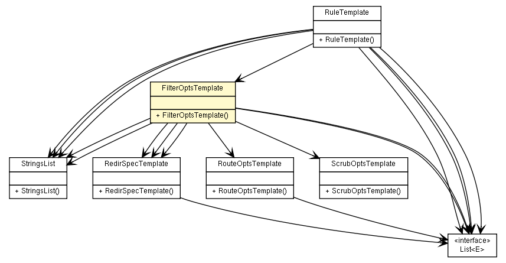

fr.univrennes1.cri.jtacl.equipments.openbsd
Class FilterOptsTemplate

java.lang.Object
 fr.univrennes1.cri.jtacl.equipments.openbsd.FilterOptsTemplate
fr.univrennes1.cri.jtacl.equipments.openbsd.FilterOptsTemplate
public class FilterOptsTemplate
- extends java.lang.Object
Template to build PF rule filter options. This class is used at parsing time
as an intermediate storage.
- Author:
- Patrick Lamaiziere
- See Also:
PfRule
| Methods inherited from class java.lang.Object |
clone, equals, finalize, getClass, hashCode, notify, notifyAll, toString, wait, wait, wait |
FilterOptsTemplate
public FilterOptsTemplate()
getAction
public java.lang.String getAction()
setAction
public void setAction(java.lang.String action)
isAllowopts
public boolean isAllowopts()
setAllowopts
public void setAllowopts(boolean allowopts)
isBinat
public boolean isBinat()
setBinat
public void setBinat(boolean binat)
getDivertAddr
public java.lang.String getDivertAddr()
setDivertAddr
public void setDivertAddr(java.lang.String divertAddr)
getDivertPort
public java.lang.String getDivertPort()
setDivertPort
public void setDivertPort(java.lang.String divertPort)
getDivertPacketPort
public java.lang.String getDivertPacketPort()
setDivertPacketPort
public void setDivertPacketPort(java.lang.String divertPacketPort)
getFlags
public StringsList getFlags()
isFragment
public boolean isFragment()
setFragment
public void setFragment(boolean fragment)
getIcmp6spec
public java.util.List<IcmpItem> getIcmp6spec()
getIcmpspec
public java.util.List<IcmpItem> getIcmpspec()
getLabel
public java.lang.String getLabel()
setLabel
public void setLabel(java.lang.String label)
getMatchTag
public java.lang.String getMatchTag()
setMatchTag
public void setMatchTag(java.lang.String matchTag)
isMatchTagNot
public boolean isMatchTagNot()
setMatchTagNot
public void setMatchTagNot(boolean matchTagNot)
getMax_mss
public int getMax_mss()
setMax_mss
public void setMax_mss(int max_mss)
getMinttl
public int getMinttl()
setMinttl
public void setMinttl(int minttl)
getNodf
public int getNodf()
setNodf
public void setNodf(int nodf)
getOptions
public StringsList getOptions()
getPQname
public java.lang.String getPQname()
setPQname
public void setPQname(java.lang.String PQname)
getProbability
public java.lang.String getProbability()
setProbability
public void setProbability(java.lang.String probability)
getQname
public java.lang.String getQname()
setQname
public void setQname(java.lang.String qname)
getRandomid
public int getRandomid()
setRandomid
public void setRandomid(int randomid)
getRcv
public java.lang.String getRcv()
setRcv
public void setRcv(java.lang.String rcv)
getRouteOpts
public RouteOptsTemplate getRouteOpts()
setRouteOpts
public void setRouteOpts(RouteOptsTemplate routeOpts)
getRtableId
public java.lang.String getRtableId()
setRtableId
public void setRtableId(java.lang.String rtableId)
getScrubOpts
public ScrubOptsTemplate getScrubOpts()
setScrubOpts
public void setScrubOpts(ScrubOptsTemplate scrubOpts)
getSettos
public int getSettos()
setSettos
public void setSettos(int settos)
getTag
public java.lang.String getTag()
setTag
public void setTag(java.lang.String tag)
getTos
public java.lang.String getTos()
setTos
public void setTos(java.lang.String tos)
getNat
public RedirSpecTemplate getNat()
setNat
public void setNat(RedirSpecTemplate nat)
getRdr
public RedirSpecTemplate getRdr()
setRdr
public void setRdr(RedirSpecTemplate rdr)
getRroute
public RedirSpecTemplate getRroute()
setRroute
public void setRroute(RedirSpecTemplate rroute)
Copyright © 2010. All Rights Reserved.